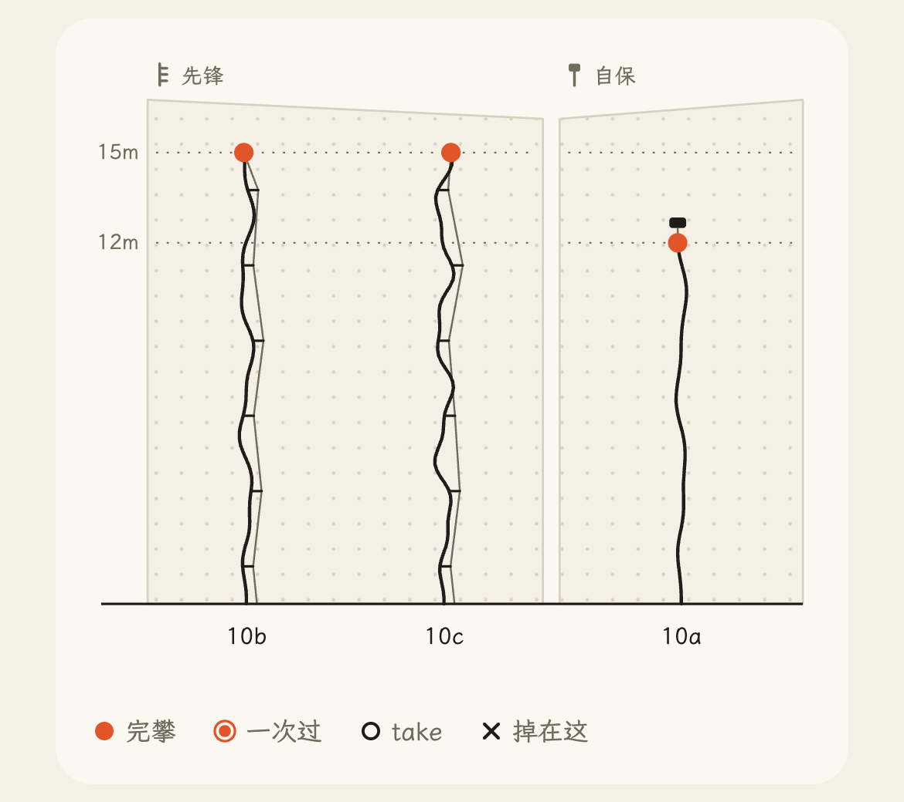
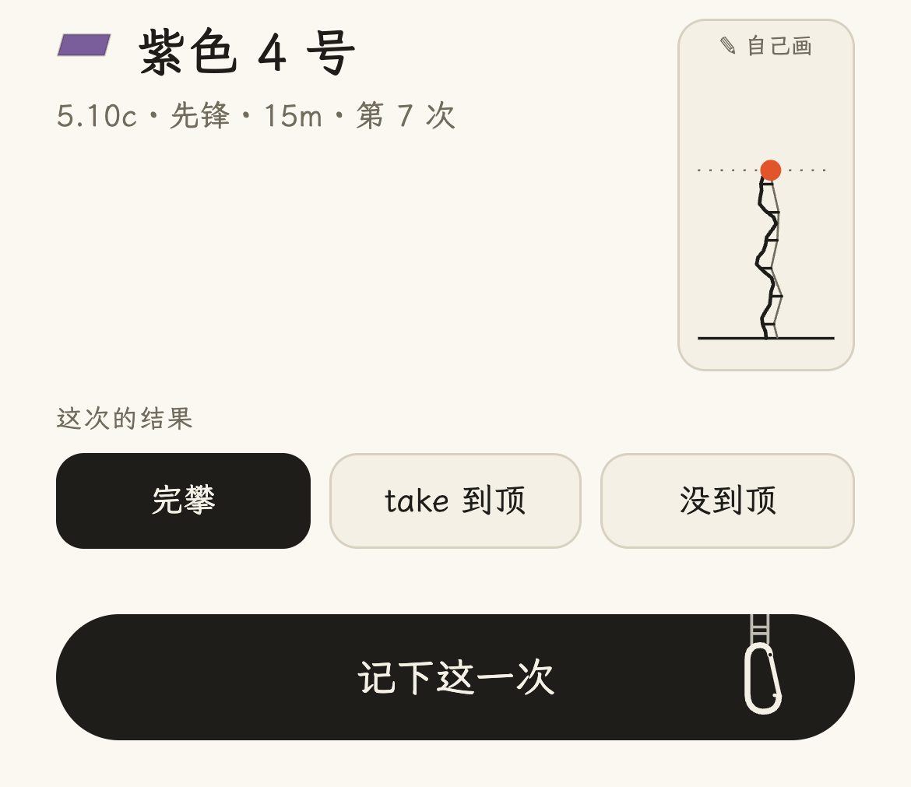
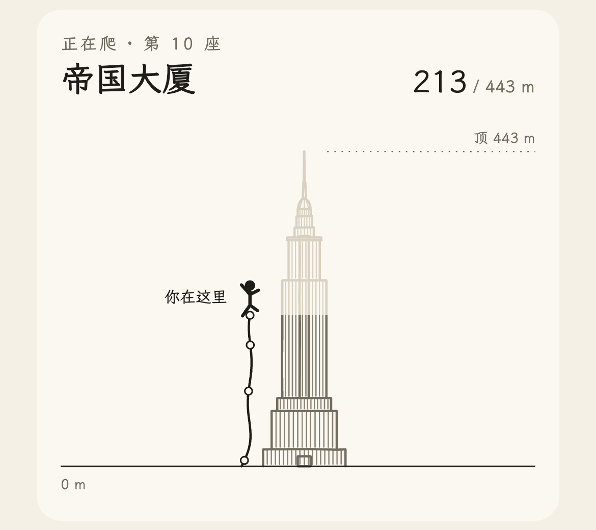
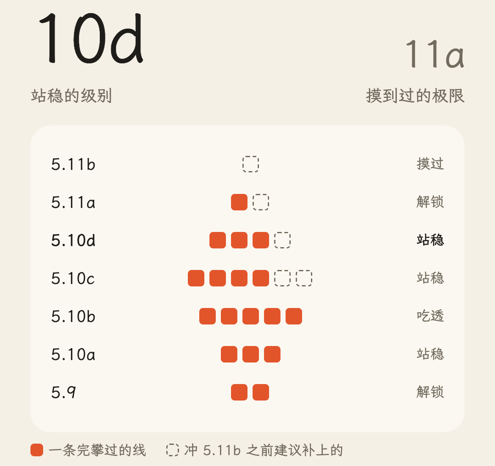
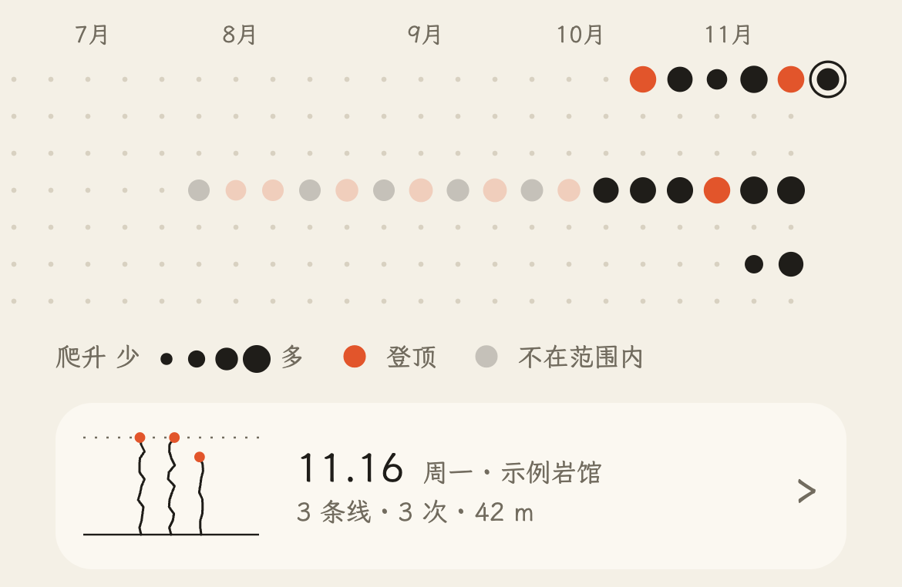
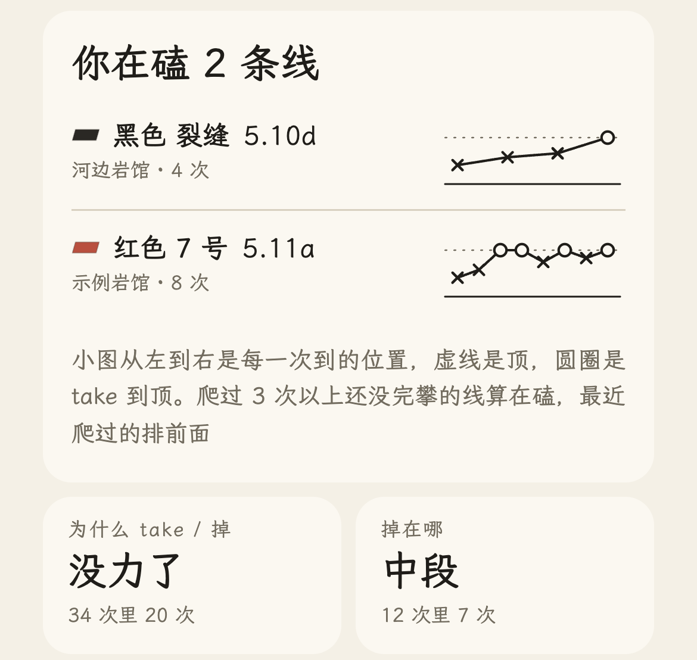

爬过的线，都会留下痕迹

选一条线，点下这次的结果：完攀、take 到顶，还是没到顶。新线可以用手指画出它的走向，以后每次都按这个形状显示。

每次爬的米数都会累加。从天坛祈年殿、埃菲尔铁塔，一路爬到富士山和珠穆朗玛，爬够它的海拔就算登顶。

同一条线重复爬只算一条。完攀 1 条算解锁，3 条算站稳，5 条算吃透，你的级别按站稳的那一级来算。

一年里的每一天排成点阵，点越大那天爬升越多，登顶的日子是橙色。点一下，就回到那一天。

正在磕的线、为什么 take 和掉、掉在哪一段、完攀率和节奏，都按固定规则算出来，样本太少的不显示。

不用注册，打开就能记。所有记录只存在这台手机的浏览器里，不会上传。
换手机之前，可以存成文件，或者复制成一段文字备份；恢复也是这两种方式。
想要更细的复盘，把这段时间的统计整理成一段话，补一句这个周期想要什么，复制给任何一个 AI 助手。
发给 AI 的只有统计，没有逐条记录。